Kompromat refers to materials collected specifically for the purpose of blackmailing the target. It’s a Russian portmanteau of komprometiruyushchiy, “compromising,” and material, “material,” and if those Russian words look familiar, it’s because they are; they were borrowed into Russian from English.
As we are on the precipice of war with North Korea and now Iran, a Constitutional crisis, and losing our planet to the effects of climate change, I often wonder, what happened to the good people of this country? Have they simply abandoned their lifelong values, only to adopt new ones admired by bedlamites, or is the shift in this country rooted in something much deeper than many of us are able to recognize? The day after the election, I was in complete shock and by Thanksgiving, I was still mystified; the extreme adulation that Trump supporters offered then, and still offer now, made no sense to me, especially from the women. Being from New York and a woman myself, I have many times endured the creepiness of perverts making demeaning remarks about my appearance, and have even had my genitals groped on the subway. Over the years, I have seen Trump make remarks about women, rating their “hotness” and letting the world know who he would or would not sleep with, depending on whether or not they satisfied his standards of beauty; and from his interaction with women, it is very apparent that he believes women were put on this earth to look good in a bikini and prance around half-naked on stage. Yet this did not stop women from voting for him.
The day after Thanksgiving, I learned that it was white working-class women that put Trump over the edge. Before the election, I had watched hundreds of women come to Trump’s rescue on social media, excusing his behavior with an almost unanimous declaration; that he is just an average guy, not a politician, who wants to help Americans prosper — so what that he makes fun of the disabled and is a misogynistic bigot. To them, they saw Trump as both the guy next door and the fast-talking, savvy New York businessman who knows how to get things done. But here it is, almost a year later, and I am still observing hundreds of women defend Trump on social media, day after day. The same women who have witnessed and tolerated this man-child’s temper tantrums and scurrilous outbursts, without reaping any benefits from his presidency, are still relentlessly coming to his defense, bashing anyone along the way who questions their loyalty. Initially, I think women were drawn to Trump because they were envious of Hillary; the successful, smart, ambitious woman that surpassed what most women would do career-wise, tenfold. But they also liked Trumps charisma and made excuses for his repugnant behavior, because that’s what we do; we get into relationships with men and when we discover something we don’t like about the person we’re dating, we ignore that flawed character trait and hope they will change. Of course this never happens, but we end up sticking with the guy anyway, despite all of the behaviors we disapprove of. And so this explains where female Trump supporters are today; they cannot admit they made a mistake and move on, rather they dig their heels in the ground even harder. Because if they admit they helped get a sociopath elected, what would that say about themselves? That they fell for a con-artist that is taking advantage of them and they were to foolish and naive to see this coming? No, they would rather stick it out and suffer the consequences.
And so this brings me back to my initial question; what happened to the good people of this country? It would be easy to write Trump supporters off as idiots, racists, or mentally ill— and some of them are. But just like female Trump supporters, the male supporters are now playing the role of a women who stay dysfunctional relationships; they are still hoping that Trump will change and they cannot admit they are dating a lunatic.
Selected Readings On Trump: Con Man of the Century
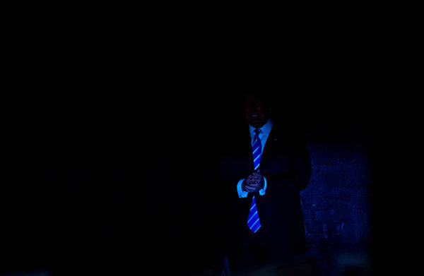
The Apotheosis of Donald J. Trump
by Thomas B. Edsall
No previous nominee has been so much the creation of social media and so little the creation of a political party.
Trump’s violation of ethical and business norms are available for all to see. (For an exhaustive and informative compendium, see the Atlantic’s recent summary, “The Many Scandals of Donald Trump: A Cheat Sheet.”)
While Haley Barbour, a former Republican National Committee chairman, called it a “nothingburger,” allegations that on the opening night of the convention Melania Trump plagiarized a Michelle Obama speech reinforced the image of Trump and his family as duplicitous. Michael Murphy, a former supporter of Jeb Bush, called the mood among Republican operatives on Tuesday morning “something between grim resignation and the Donner Party.”
Perhaps most important is the acquiescence of the Republican Party and of a large segment of the voting public to Trump’s flagrant disregard for democratic procedure in politics and governing.
Continue Reading
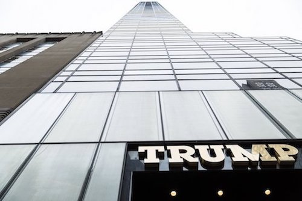
Trump’s Empire: A Maze of Debts and Opaque Ties by Suzanne Craig
On the campaign trail, Donald J. Trump, the Republican presidential nominee, has sold himself as a businessman who has made billions of dollars and is beholden to no one.
But an investigation by The New York Times into the financial maze of Mr. Trump’s real estate holdings in the United States reveals that companies he owns have at least $650 million in debt — twice the amount than can be gleaned from public filings he has made as part of his bid for the White House. The Times’s inquiry also found that Mr. Trump’s fortunes depend deeply on a wide array of financial backers, including one he has cited in attacks during his campaign. Continue Reading
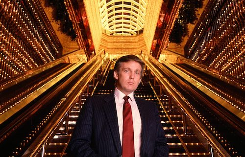
My meeting with Donald Trump: A damaged, pathetic personality — whose obvious impairment has only go
by Bill Curry
I arrived at Trump Tower in early evening, accompanied by my finance chair and an old friend and colleague. Stepping off the elevator into his apartment, we were met by a display of sterile, vulgar ostentation: all gold, silver, brass, marble; nothing soft, welcoming or warm. Trump soon appeared and we began to converse, but not really. In campaigns, we candidates do most of the talking; because we like to, and because people ask us lots of questions. Not this time. Not by a long shot.
Trump talked very rapidly and virtually nonstop for nearly an hour; not of my campaign or even of politics, but only of himself, and almost always in the third person. He’d given himself a nickname: "the Trumpster," as in “everybody wants to know what the Trumpster’s gonna do,” a claim he made more than once.
He mostly told stories. Some were about his business deals; others about trips he’d taken or things he owned. All were unrelated to the alleged point of our meeting, and to one another. That he seldom even attempted segues made each tale seem more disconnected from reality than the last. It was funny at first, then pathetic, and finally deeply unsettling.
Continue Reading
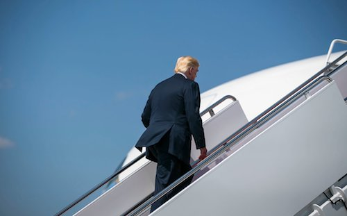
America’s Whiniest ‘Victim’ by Charles M. Blow
Trump becomes a tool of those in possession of legacy power in this country — and those who feel that power is their rightful inheritance — who are pulling every possible lever to enshrine and cement that power. Suppressing the vote. Restricting immigration. Putting the brakes on cultural inclusion.
Make America great again. Turn back the clock to a time when privileges of whiteness were supreme and unassailable, misogyny was simply viewed as an extension of masculinity, women got back-alley abortions and worked for partial wages, coal was king and global warming was purely academic, and trans people weren’t in our bathrooms or barracks. The good old days. Continue Reading
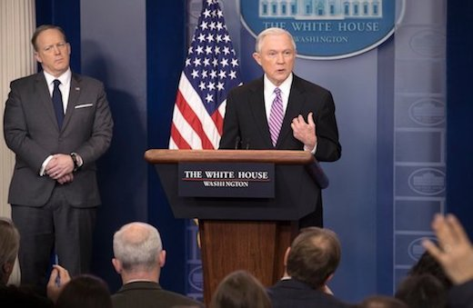
The Lawless Presidency by David Leonhardt
Trump attacks the media almost daily, and McClatchy has reported that these attacks will be part of the Republicans’ 2018 campaign strategy. Trump has gone so far as to call journalists “the enemy of the people,” a phrase that authoritarians have long used to paint critics as traitors. “To hear that kind of language directed at the American press,” David Remnick, the editor of The New Yorker, has said, “is an emergency.”
All Americans, including the president, should feel comfortable criticizing the media. (I certainly do.) Specific media criticisms are part of the democratic cacophony. But Trump is doing something different.
He demonizes sources of information that are not sufficiently supportive. He tells supporters that they can trust only him and his loyal mouthpieces to speak the truth. Continue Reading
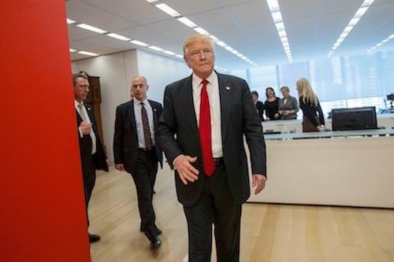
No, Trump, We Can’t Just Get Along by Charles M. Blow
You are a fraud and a charlatan. Yes, you will be president, but you will not get any breaks just because one branch of your forked tongue is silver.
I am not easily duped by dopes.
I have not only an ethical and professional duty to call out how obscene your very existence is at the top of American government; I have a moral obligation to do so.
I’m not trying to convince anyone of anything, but rather to speak up for truth and honor and inclusion. This isn’t just about you, but also about the moral compass of those who see you for who and what you are, and know the darkness you herald is only held at bay by the lights of truth.
It’s not that I don’t believe that people can change and grow. They can. But real growth comes from the accepting of responsibility and repenting of culpability. Expedient reversal isn’t growth; it’s gross.
So let me say this on Thanksgiving: I’m thankful to have this platform because as long as there are ink and pixels, you will be the focus of my withering gaze.
I’m thankful that I have the endurance and can assume a posture that will never allow what you represent to ever be seen as everyday and ordinary.
No, Mr. Trump, we will not all just get along. For as long as a threat to the state is the head of state, all citizens of good faith and national fidelity — and certainly this columnist — have an absolute obligation to meet you and your agenda with resistance at every turn.
I know this in my bones, and for that I am thankful. Continue Reading
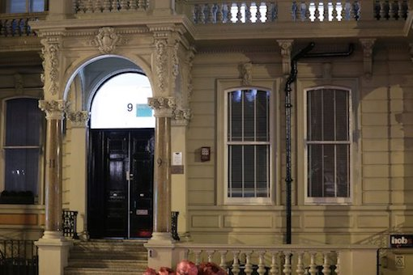
How a Sensational, Unverified Dossier Became a Crisis for Donald Trump by Scott Shane, Nicholas Confessore and Matthew Rosenberg
Seven months ago, a respected former British spy named Christopher Steele won a contract to build a file on Donald J. Trump’s ties to Russia. Last week, the explosive details — unsubstantiated accounts of frolics with prostitutes, real estate deals that were intended as bribes and coordination with Russian intelligence of the hacking of Democrats — were summarized for Mr. Trump in an appendix to a top-secret intelligence report.
The consequences have been incalculable and will play out long past Inauguration Day. Word of the summary, which was also given to President Obama and congressional leaders, leaked to CNN Tuesday, and the rest of the media followed with sensational reports.
Mr. Trump denounced the unproven claims Wednesday as a fabrication, a Nazi-style smear concocted by “sick people.” It has further undermined his relationship with the intelligence agencies and cast a shadow over the new administration. Continue Reading
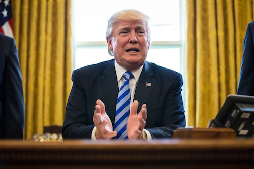
Donald, This I Will Tell You by Maureen Dowd
You promised to get the best people around you in the White House, the best of the best. In fact, “best” is one of your favorite words.
Instead, you dragged that motley skeleton crew into the White House and let them create a feuding, leaking, belligerent, conspiratorial, sycophantic atmosphere. Instead of a smooth, classy operator like James Baker, you have a Manichaean anarchist in Steve Bannon.
You knew the Republicans were full of hot air. They haven’t had to pass anything in a long time, and they have no aptitude for governing. To paraphrase an old Barney Frank line, asking the Republicans to govern is like asking Frank to judge the Miss America contest — “If your heart’s not in it, you don’t do a very good job.”
You knew that Paul Ryan’s vaunted reputation as a policy wonk was fake news. Republicans have been running on repealing and replacing Obamacare for years and they never even bothered to come up with a valid alternative. Continue Reading
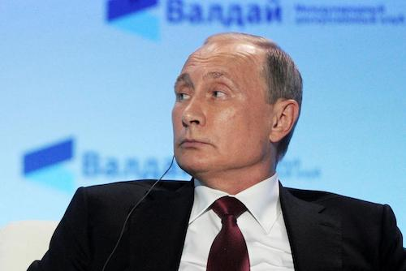
Why Vladimir Putin's Russia Is Backing Donald Trump by Kurt Eichenwald
In phone calls, meetings and cables, America’s European allies have expressed alarm to one another about Donald Trump’s public statements denying Moscow’s role in cyberattacks designed to interfere with the U.S. election. They fear the Republican nominee for president has emboldened the Kremlin in its unprecedented cybercampaign to disrupt elections in multiple countries in hopes of weakening Western alliances, according to intelligence, law enforcement and other government officials in the United States and Europe.
While American intelligence officers have privately briefed Trump about Russia’s attempts to influence the U.S. election, he has publicly dismissed that information as unreliable, instead saying this hacking of incredible sophistication and technical complexity could have been done by some 400-pound “guy sitting on their bed” or even a child. Continue Reading
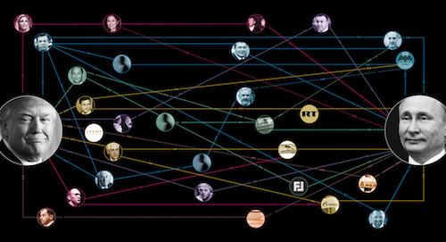
All of Trump’s Russia Ties, in 7 Charts by Michael Crowley
What is the real story of Donald Trump and Russia? The answer is still unclear, and Democrats in Congress want to get to the bottom of it with an investigation. But there’s no doubt that a spider web of connections—some public, some private, some clear, some murky—exists between Trump, his associates and Russian President Vladimir Putin.
These charts illustrate dozens of those links, including meetings between Russian officials and members of Trump’s campaign and administration; his daughter’s ties to Putin’s friends; Trump’s 2013 visit to Moscow for the Miss Universe pageant; and his short-lived mixed martial arts venture with one of Putin’s favorite athletes. The solid lines mark established facts, while dotted ones represent speculative or unproven connections. Continue Reading
When the World Is Led by a Child by David Brooks
At certain times Donald Trump has seemed like a budding authoritarian, a corrupt Nixon, a rabble-rousing populist or a big business corporatist.
But as Trump has settled into his White House role, he has given a series of long interviews, and when you study the transcripts it becomes clear that fundamentally he is none of these things.
At base, Trump is an infantalist. There are three tasks that most mature adults have sort of figured out by the time they hit 25. Trump has mastered none of them. Immaturity is becoming the dominant note of his presidency, lack of self-control his leitmotif. Continue Reading
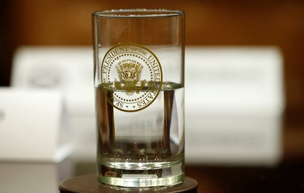
Noam Chomsky: On Trump and the State of the Union by George Yancy and Noam Chomsky
A segment of the Trump base comes from the industrial sector that has been cast aside for decades by both parties, often from rural areas where industry and stable jobs have collapsed. Many voted for Obama, believing his message of hope and change, but were quickly disillusioned and have turned in desperation to their bitter class enemy, clinging to the hope that somehow its formal leader will come to their rescue.
Another consideration is the current information system, if one can even use the phrase. For much of the base, the sources of information are Fox News, talk radio and other practitioners of alternative facts. Exposures of Trump’s misdeeds and absurdities that arouse liberal opinion are easily interpreted as attacks by the corrupt elite on the defender of the little man, in fact his cynical enemy. Continue Reading
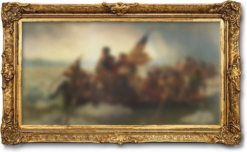
The America We Lost When Trump Won by Kevin Baker
Today’s passive, unhappy Americans sat on their couches and chose a strutting TV clown to save us. What they have done is a desecration, a foolish and vindictive act of vandalism, by which they betrayed all the best and most valiant labors of our ancestors. We don’t want to accept this, because we cannot accept that the people, at least in the long run of things, can be wrong in our American democracy. But they can be wrong, just like any people, anywhere. And until we do accept this abject failure of both our system and ourselves, there is no hope for our redemption. A couple of days after the election I watched on CNN as red-faced Russian apparatchiks in Moscow toasted one another on their great success. “Hurrah!” I thought. “No more American exceptionalism! We have joined up with the drunken idiot of history!” Once Russians, too, and especially Russian writers, were certain that there was a special destiny for the Russian soul. But a century of disastrous choices and their consequences seems to have disillusioned them. They have so much to teach us. Continue Reading
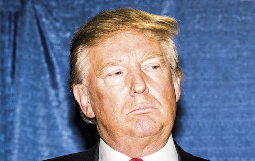
The Mind of Donald Trump by Dan P. McAdams
Trump seems supremely cognizant of the fact that he is always acting. He moves through life like a man who knows he is always being observed. If all human beings are, by their very nature, social actors, then Donald Trump seems to be more so—superhuman, in this one primal sense.
Many questions have arisen about Trump during this campaign season—about his platform, his knowledge of issues, his inflammatory language, his level of comfort with political violence. This article touches on some of that. But its central aim is to create a psychological portrait of the man. Who is he, really? How does his mind work? How might he go about making decisions in office, were he to become president? And what does all that suggest about the sort of president he’d be? Continue Reading
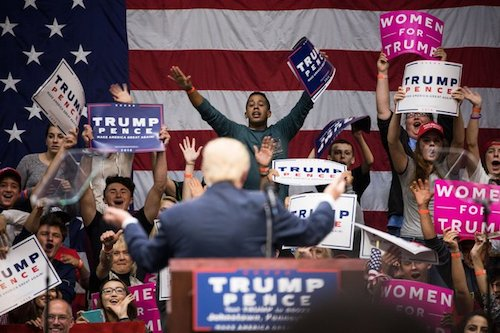
Donald Trump’s Political Stew by Thomas B. Edsall
Trump has oriented the party toward heightened anger, intensified racial resentment, animosity to immigrants and opposition to trade.
This is an exceptionally volatile mix. Trump is fanning rather than quelling the flames — everything he has done so far has been to raise, not lower, the heat. The next question is whether the Republican Party will be able to continue to exploit this mix or whether it will boil over in ways that cannot be predicted. Continue Reading
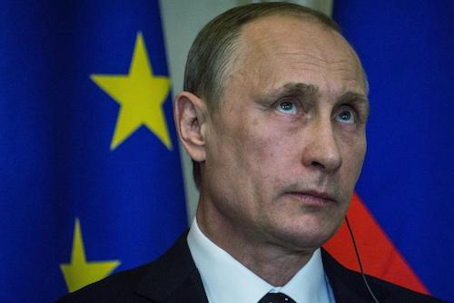
Trump seeks sharp cuts to housing aid, except for program that brings him millions by Shawn Boburg
The federal government has paid the partnership that owns Starrett City more than $490 million in rent subsidies since May 2013, according to figures provided by a spokesman for the Department of Housing and Urban Development. Nearly $38 million of that has come since Trump took office in January. That subsidy generates steady income for Trump and his siblings, each of whom inherited an interest in the property when their father died. Although it represents a small portion of his overall wealth, it is one of the few examples of money the president derives directly from the federal government he oversees.Continue Reading
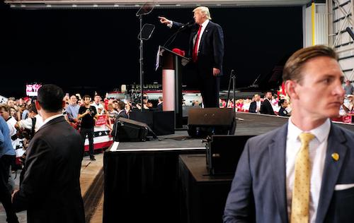
A People's History of Donald Trump's Business Busts and Countless Victims by Kurt Eichenwald
This incident from long before Trump became a household name is an ideal exemplar for his business career, in which he has repeatedly left bitterness and ruin in his wake. His destructive behavior—spurred by recklessness, arrogance and an unslakable thirst for vengeance—has victimized cities, businesses, investors, partners, even members of his family. Trump is now completing his biggest and most astonishing demolition: tearing down the Republican Party. Since the disclosure of a recording earlier this month in which Trump demeans women and boasts of sexually assaulting them, the GOP presidential nominee has vowed to make his campaign a scorched-earth mission. He now speaks of vast conspiracies against him involving bankers, the media and politicians, while raging against Republicans who have pulled away from his toxic campaign, ripping open chasms between his zealous supporters and the GOP. Continue Reading
We Have a President Who Cannot Finish a Sentence
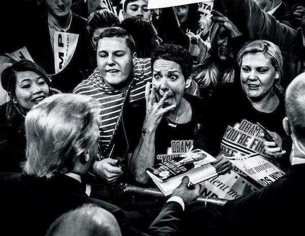
"No, he was asking me a theoretical, or just a question in theory, and I talked about it only from that standpoint. Of course not. And that was done, he said, you know, I guess it was theoretically, but he was asking a rhetorical question, and I gave an answer. And by the way, people thought from an academic standpoint, and, asked rhetorically, people said that answer was an unbelievable academic answer! But of course not, and I said that afterwards." -Donald J. Trump
"Look, having nuclear—my uncle was a great professor and scientist and engineer, Dr. John Trump at MIT; good genes, very good genes, OK, very smart, the Wharton School of Finance, very good, very smart—you know, if you’re a conservative Republican, if I were a liberal, if, like, OK, if I ran as a liberal Democrat, they would say I'm one of the smartest people anywhere in the world—it’s true!—but when you're a conservative Republican they try—oh, do they do a number—that’s why I always start off: Went to Wharton, was a good student, went there, went there, did this, built a fortune—you know I have to give my like credentials all the time, because we’re a little disadvantaged—but you look at the nuclear deal, the thing that really bothers me—it would have been so easy, and it’s not as important as these lives are (nuclear is powerful; my uncle explained that to me many, many years ago, the power and that was 35 years ago; he would explain the power of what's going to happen and he was right—who would have thought?), but when you look at what's going on with the four prisoners—now it used to be three, now it’s four—but when it was three and even now, I would have said it's all in the messenger; fellas, and it is fellas because, you know, they don't, they haven’t figured that the women are smarter right now than the men, so, you know, it’s gonna take them about another 150 years—but the Persians are great negotiators, the Iranians are great negotiators, so, and they, they just killed, they just killed us." -Donald J. Trump
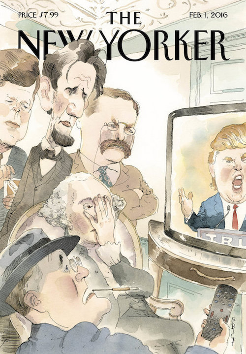
Vladimir Putin's Biggest Fan
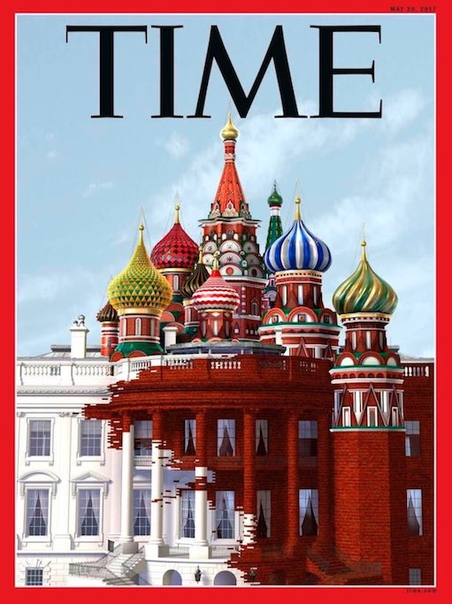
"Look at Putin, what he's doing with Russia, I mean, you know, what's going on over there. I mean this guy has done, whether you like him or don't like him, he's doing a great job in rebuilding the image of Russia and also rebuilding Russia period." -Donald J. Trump
"Putin has big plans for Russia. He wants to edge out its neighbors so that Russia can dominate oil supplies to all of Europe. I respect Putin and Russians but cannot believe our leader (Obama) allows them to get away with so much...Hats off to the Russians." -Donald J. Trump
"It is always a great honor to be so nicely complimented by a man so highly respected within his own country and beyond," Trump said in a statement. "I have always felt that Russia and the United States should be able to work well with each other towards defeating terrorism and restoring world peace, not to mention trade and all of the other benefits derived from mutual respect." -Donald J. Trump
"I'm saying that I'd possibly have a good relationship. He's been very nice to me. If we can make a great deal for our country and get along with Russia that would be a tremendous thing. I would love to try it." -Donald J. Trump
Our President, the Malignant Narcissist
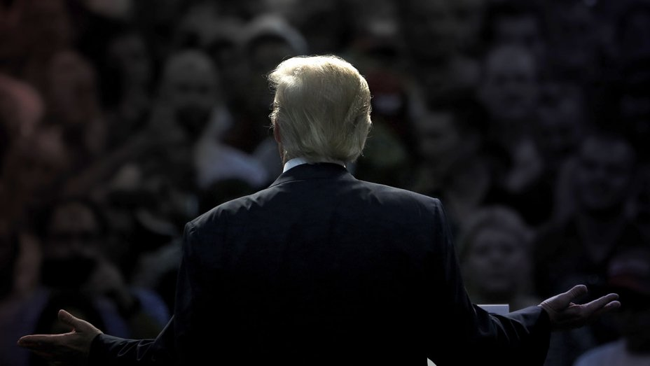
"Donald Trump’s speech and behavior show that he has severe sociopathic traits. The significance of this cannot be overstated. While there have surely been American presidents who could be said to be narcissistic, none have shown sociopathic qualities to the degree seen in Mr. Trump. Correspondingly, none have been so definitively and so obviously dangerous. Democracy requires respect and protection for multiple points of view, concepts that are incompatible with sociopathy. The need to be seen as superior, when coupled with lack of empathy or remorse for harming other people, are in fact the signature characteristics of tyrants, who seek the control and destruction of all who oppose them, as well as loyalty to themselves instead of to the country they lead. The paranoia of severe sociopathy creates a profound risk of war, since heads of other nations will inevitably disagree with or challenge the sociopathic leader, who will experience the disagreement as a personal attack, leading to rage reactions and impulsive action to destroy this 'enemy.' A common historical example is the creation, by sociopathic leaders, of an international incident to have an excuse to seize more power (suspend constitutional rights, impose martial law, and discriminate against minority groups).
Because such leaders will lie to others in government and to their citizens, those who would check the sociopath’s power find it difficult to contradict his claims and actions with facts. Would-be tyrants also typically devalue a free press, undermining journalists’ ability to inform and resist the move toward war and away from democracy. Mr. Trump’s sociopathic characteristics are undeniable. They create a profound danger for America’s democracy and safety. Over time these characteristics will only become worse, either because Mr. Trump will succeed in gaining more power and more grandiosity with less grasp on reality, or because he will engender more criticism producing more paranoia, more lies, and more enraged destruction."
-The Dangerous Case of Donald Trump, 27 Psychiatrists and Mental Health Experts Assess a President – Bandy X. Lee
top:
The Latest Articles on Trump: Con Man of the Century